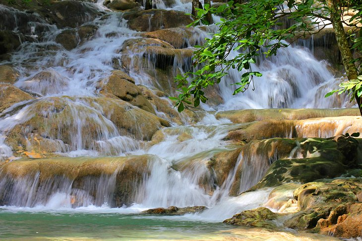
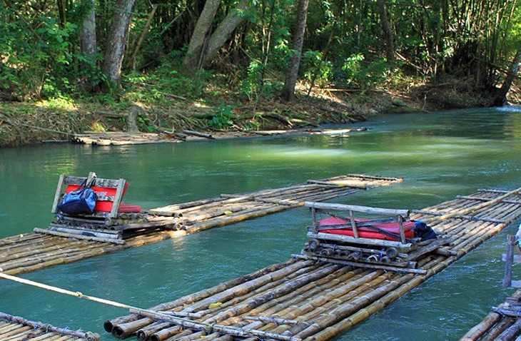

Top Tourist Destinations in Jamaica
| Destination | Address | Website | |
|---|---|---|---|
| 1 | Dunns River Falls | Ocho Rios, Jamaica | www.dunnsriverfallsja.com |
| 2 | Blue and John Crow Mountains National Park | Thornton | www.blueandjohncrowmountains.org |
| 3 | Doctor's Cave Beach, Montego Bay | White Sands Beach PO Montego Bay, Jamaica | www.doctorscavebathingclub.com |
| 4 | Blue Hole, Ocho Rios | Cascade, Lodge, Jamaica | Blue Hole |
| 5 | Rio Grande River | Rio Grande River, Jamaica | Rio Grande River |
| 6 | Rainforest Adventures Mystic Mountain, Ocho Rios | Ocho Rios, Jamaica | Mystic Mountain |
1. Dunns River Falls
Encompassing 180 meters of gently terraced waterfalls, Dunn's River Falls is one of Jamaica's most famous natural attractions. The falls tumble over rocks and limestone ledges into the sea. You can climb the natural tiers to the top of the falls with the aid of a guide and cool off in the refreshing pools at the base. It's a good idea to wear water shoes and clothing that you don't mind getting wet. Also, try to plan your visit around the cruise ship crowds. For a fun, full day outing, try a Jamaica Combo Tour: Dunn's River Falls and Bob Marley's Nine Mile. This tour stops by the village of Nine Mile, birthplace of Bob Marley, and then heads over to the Dunn's River Falls, for a guided hike up to the falls and a slide or swim in the natural pools. Hotel pickup and drop-off, entrance fees, lunch, and a guide are included. Alternatively, take a Jamaica Catamaran Cruise to Dunn's River Falls from Ocho Rios or Montego Bay. Snorkel over coral reefs, enjoy an ocean cruise, and relax and play in the water at the falls. Hotel pickup and drop-off is included.
2. Blue and John Crow Mountains National Park

In 2015, the spectacular Blue and John Crow Mountains National Park was inscribed on the list of UNESCO World Heritage Sites for its rich natural and cultural heritage. Once a refuge for former slaves and the indigenous Taino, who fled here to escape slavery, this unspoiled preserve offers breathtaking scenery. Within its borders, you can explore jungle-clad mountains; waterfalls; lush rainforests; coffee plantations; and exotic plants and animals, including 800 species of endemic plants, more than 200 species of birds, and the world's second largest butterfly. The roads and tracks are rough - especially after rain - so 4WD vehicles and/or experienced guides are highly recommended. A highlight of a visit here is the hike (or mule ride) up Jamaica's highest peak, 2,256-meter-high Blue Mountain Peak. This two-day trip offers thrilling views, and on a clear day, you can see all the way to Cuba.
3. Doctor's Cave Beach, Montego Bay
One of the best beaches in Montego Bay, Doctor's Cave Beach is an alluring strip of white sand fringed by clear waters that helped shape the fate of this popular tourist town. In the early 1920s, a famous British osteopath declared that the water had curative powers after swimming here, a claim which began to lure visitors from around the world. Hotels sprouted up, and the area became a popular tourist destination. The cave for which the beach is named was destroyed by a hurricane in 1932, but the beach is as popular as ever and is often crowded with cruise ship passengers.
4. Blue Hole, Ocho Rios
High in the rainforest-cloaked mountains outside Ocho Rios, the Blue Hole (also called Island Gully Falls or the Irie Blue Hole) is a series of picturesque waterholes fed by gushing cascades. Guides lead you around the area where you can explore the falls and jump off cliffs into the refreshing pools below. The adventure involves clambering over slippery rocks, so appropriate water shoes are recommended.
5. Rio Grande River
Expert guides pole bamboo rafts through an impressive stretch of tropical rainforest along the Rio Grande River during a two-and-a-half-hour tour. Rafting here dates back to around 1911, when banana farmers in the Rio Grande Valley used to transport their bananas along the river. The Rio Grande tends to be less crowded than the Martha Brae River and offers beautiful scenery and gentle rapids.
6. Rainforest Adventures Mystic Mountain, Ocho Rios
At Rainforest Adventures Mystic Mountain, you can enjoy panoramic views of the town and sea on the Sky Explorer, a chairlift ascending the mountain. The more adventurous can zoom down the mountain on Bobsled Jamaica, a single-person roller coaster ride through the forest, or glide through the treetops on ziplines. Other attractions here include guided nature walks, butterfly and hummingbird gardens, and an infinity pool and waterslide. Book a Bobsledding Tour at Mystic Mountain in advance. For visitors arriving by cruise ship, free pickup from the port is included with this tour.
All information taken from www.planetware.com